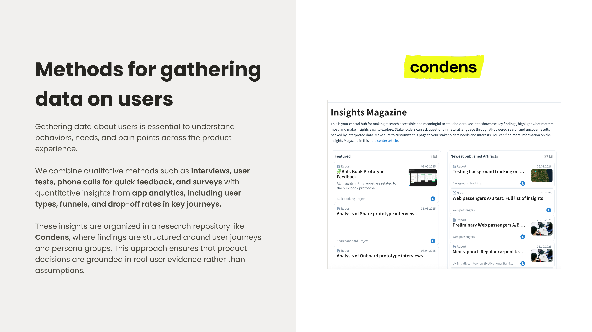
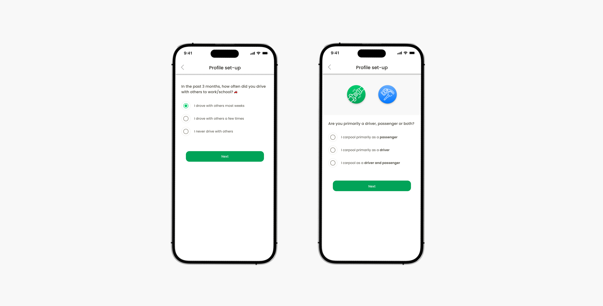
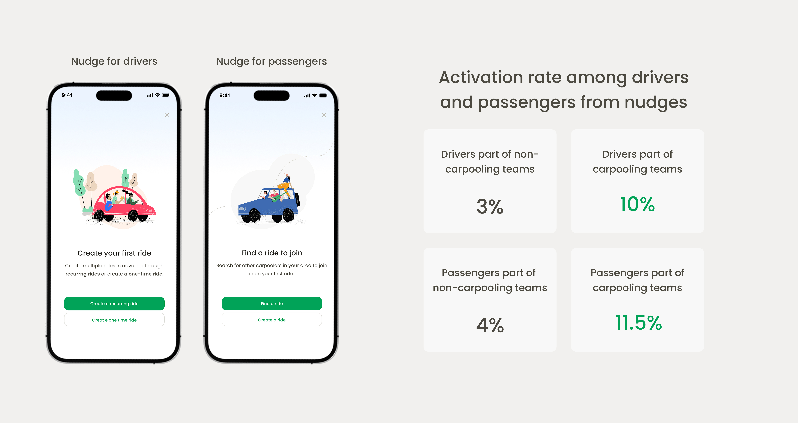
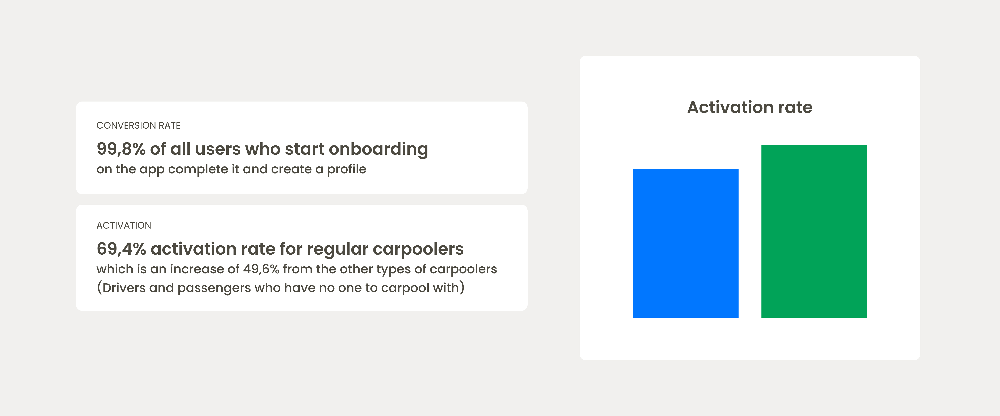

Designing Onboardings that convert - Nabogo ApS
👩🏻 UX Strategy: Which users are most likely to start carpooling immediately?
📈 UX/UI Changes in the onboarding flow based on user insights
My role
🎯 Lead End-to-end Product Execution
Own the design process from concept to launch.
👨💼 Champion the User
Designing user centric features and user journey by implementing data from user test, user interviews and surveys.
📊 Measure & Improve
Track impact for new feature and imporvements and refine based on data together with PM and lead engineer.
✅ Enforce Quality Standards
Implement design reviews, usability checks, and QA testing to ensure consistency and a smooth user experience.
🚀 Craft Scalable UI
Create clear, consistent interfaces using Figma and maintain shared libraries and design systems.


Focus on users with an innovative mindset
The Diffusion of Innovation model explains how different types of people adopt new products or technologies over time. It categorizes users into groups such as innovators, early adopters, early majority, late majority, and laggards, each with different motivations and levels of risk tolerance. When designing personas, this framework helps teams understand which users are most likely to try a new product first and how adoption may grow as the product matures.

📈 The focus should be on existing carpooling teams
A strategic focus for Nabogo is carpooling teams - groups of colleagues who are already sharing rides informally. Because these users are already carpooling, the barrier to adoption is much lower: they don't need to be convinced of the value or spend time finding matches. Instead, the app simply helps them organize, coordinate, and manage the rides they are already doing. This makes onboarding easier and increases the likelihood of early engagement and consistent usage.

User Flows for Onboarding
Gathering data about users is essential to understand behaviors, needs, and pain points across the product experience and in this case for the new onboarding flow changes.
We combine qualitative methods such as interviews and user tests with app analytics data such as funnels. For the onboarding flow we were very interested about the user drop off rate and how clear the new steps are in the onboarding.
Below are the personas we considered for user tests and the funnels they would be going through:

Shifting from a ‘Resgistration’ flow to an ‘Onboarding’ flow
Before the flow of the app was quite simple and focused on the user creating their credentials and using their phone number for verification. For the new flow, we are asking the user for more information and adding nudges in order to set up and personalize their carpooling profile.
To do so, we are asking:
- What type of carpooler are you (Passenger, driver or both)
- How often do you carpool?
- Where are you carpooling from and to?
- Would you like to create a carpool right now? (Nudge)
- Would you like to share your carpool ride with your work colleagues? (Nudge)
Old flow that was a simple registration:

New flow that is an onboarding flow getting users set up to use the app:

Are the right users recruited on the Nabogo app?
These screens were added to the app’s onboarding flow to help users set up their profiles. By collecting this information early, we gain a better understanding of who is registering on the platform and whether our marketing and sales initiatives are reaching the right audience. Additionally, we can also tailor the experience based on the user being a driver, passenger or both.

Experiment: Which users are most likely to start carpooling immediately?
At Nabogo, activation rate refers to users who not only create an account but also complete their first carpool - either by offering or joining a ride. This metric is critical for a carpooling platform, as real value is only created when users actually start sharing rides, not just registering. By collecting relevant user data during onboarding and prompting users to add their first ride, we can analyze how different user groups move through the onboarding funnel and identify which users activate the fastest. These insights help optimize the experience to encourage quicker engagement and increase the likelihood of successful carpools.

Users are used to longer onboarding flows from other apps and the reception was overall positive
The new onboarding flow was tested on users at an in-person event at the headquarters of Novo Nordisk, one of Nabogo’s carpooling partners. There we onboarded 100+ people during the event.
Key insight 1
Users struggled to understand the wording in the onboarding step where we ask about their carpooling habits. Some participants had never carpooled before registering for the app, while others found it difficult to accurately recall how often they had previously carpooled. This step is important because it helps identify whether users are already carpooling with colleagues. If they are, our hypothesis is that they are more likely to activate immediately by creating their first carpool ride. The fix for this lay in the UX copy writing and it was an easy change.

Key insight 2
Users were used to longer onboarding flows from other apps and all the participants completed the onboarding flow at the event. None of the steps were surprising or irrelevant and the reception of the new onboarding on the app has been overall positive.
Outcome
The new onboarding has been a success and created more conversions than the previous in the first 3 months
The redesigned onboarding flow improved clarity and reduced friction during signup, leading to a noticeable increase in user engagement and more successful conversions within the first three months after launch. Furthermore now we can track user groups better and see patterns between them.
